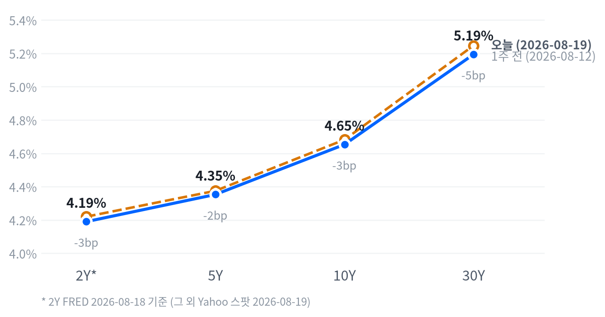

재무부가 10~30년 구간 국채 유동성지원 바이백 규모를 최소 두 배로 확대한다고 발표하면서 30년물이 장중 5.26%대에서 5.18%대까지 급락했고, 그 온기가 증시로 번지며 3거래일 연속 하락을 끊었다. 모더나·머크의 흑색종 백신 3상 호재가 헬스케어를 견인했고, 가치주(S&P500 밸류 +0.74%)가 성장주(S&P500 그로스 -0.25%)를 크게 앞서는 로테이션이 뚜렷했다. 반면 메모리주는 샌디스크의 실망스러운 매출 가이던스 여파로 동반 급락했다.
동인. 오늘 장을 움직인 가장 큰 손은 연준이 아니라 재무부였다. 장기채 바이백 확대라는 재정측 대응이 30년물 금리를 장중 5.26%대에서 5.18%대까지 끌어내렸고, 그 할인율 완화가 금리 민감 섹터를 밀어올리며 지수 반등을 만들었다. 여기에 모더나·머크의 임상 호재가 헬스케어 단일 섹터에 +3.51%라는 큰 폭의 알파를 더했다.
크로스에셋 정합성. 국채 랠리·달러 약세·금 급등·가치주 우위가 모두 "금리 하락" 하나의 서사로 정합적으로 엮인다. 반면 메모리·반도체는 이 흐름에서 예외였다 — 샌디스크 가이던스 실망과 AI 수요 성장둔화 논란이라는 개별 재료가 매크로 순풍을 압도했다. 이는 오늘의 상승이 브로드하지 않고 재료가 있는 곳에만 선택적으로 반영된 로테이션이라는 뜻이다.
다음 촉매. 이날 오후 공개된 7월 FOMC 의사록에서 인상 소수의견을 던진 지역 연은 총재 3인 외 위원들의 온도가 어땠는지가 다음 세션 금리 방향을 좌우할 변수다. 재무부 바이백은 통화정책과 무관한 재정측 조치라 "금리 하락=완화적"으로 단순 해석하면 안 된다는 지적이 많았던 만큼, 의사록이 매파 쪽으로 해석되면 오늘의 되돌림이 빠르게 되돌아갈 수 있다.
| 지수 | 종가 | 등락 | 등락률 |
|---|---|---|---|
| S&P 500 Value | 238.45 | +1.75 | +0.74% |
| Russell 2000 | 3,032.94 | +15.05 | +0.50% |
| Dow | 53,463.05 | +119.65 | +0.22% |
| S&P 500 | 7,707.98 | +16.22 | +0.21% |
| Nasdaq | 26,331.09 | +41.38 | +0.16% |
| S&P 500 Growth | 139.33 | -0.35 | -0.25% |
| 섹터 | 등락률 |
|---|---|
| Health Care | +3.51% |
| Consumer Discretionary | +1.92% |
| Materials | +1.43% |
| Consumer Staples | +1.12% |
| Real Estate | +0.81% |
| Communication Services | +0.76% |
| Utilities | 0.00% |
| Energy | -0.16% |
| Financials | -0.62% |
| Industrials | -0.88% |
| Technology | -1.07% |
나스닥은 개장과 함께 밀리기 시작해 09:30 ET에 시가 대비 -0.72%까지 저점을 찍은 뒤 되돌림을 시작했고, 정오(12:00 ET) 무렵 시가 대비 +0.29%까지 오르며 고점을 형성한 다음 소폭 되밀려 +0.16% 마감에 그쳤다. S&P500도 거의 같은 시각(09:30 ET, -0.22%)에 저점을 찍고 11:00 ET에 +0.35%까지 올랐다가 되밀려 +0.21%로 마쳤다. 두 지수의 저점 시각이 09:30으로 겹치는 것은 재무부의 바이백 확대 발표가 정규장 개장 직전~직후 오전 시간대에 나오면서 초반 매물을 빠르게 흡수했음을 보여준다.
러셀2000은 궤적이 조금 달랐다. 11:00 ET에 시가 대비 +0.47%로 대형주보다 먼저 고점을 찍은 뒤 오후 들어 되밀려 14:30 ET에 -0.20%까지 반납했다가 마감 무렵 다시 회복해 +0.50%로 끝냈다 — 대형주가 정오 이후 상승분을 반납한 것과 달리 소형주는 오후 되돌림을 다시 만회한 셈이다.
엔비디아는 09:30 ET 시가 대비 +0.54%로 잠깐 고점을 찍었으나 이후 급격히 밀려 10:00 ET에는 -2.22%까지 저점을 찍었고, 결국 -0.99% 하락 마감했다. 메모리·반도체 전반이 샌디스크 가이던스 실망과 AI 수요 성장둔화 논란에 짓눌린 여파가 엔비디아에도 옮겨붙은 모습이다.
오늘 장세의 본질은 지수 상승폭보다 로테이션의 폭이다. 재무부 바이백이 만든 금리 하락이 헬스케어·소비재·부동산 같은 금리 민감 가치주를 밀어올린 반면, 메모리·반도체가 낀 기술섹터는 -1.07%로 홀로 뒤처졌다. 대형 기술주 의존도가 높은 나스닥의 상승폭(+0.16%)이 다우(+0.22%)·러셀2000(+0.50%)보다 작았던 것도 같은 맥락이다.
모더나·머크발 헬스케어 급등은 지수 전체보다 개별 종목 임팩트가 커서 포트폴리오 관점에서는 헬스케어 섹터 익스포저의 질(바이오텍 vs 대형 제약)을 구분해서 볼 필요가 있다. 가치주가 성장주를 0.99%p 앞선 하루 스프레드는 최근 몇 주 흐름 중에서도 큰 편이라, 이 로테이션이 하루짜리 이벤트인지 추세 전환의 시작인지는 다음 며칠의 매크로 지표와 금리 흐름을 더 지켜봐야 한다.
| 만기 | 종가(2026-08-19) | 전일比(bp) | 1주 전 | 주간 변화(bp) |
|---|---|---|---|---|
| 2Y* | 4.19% | 0.0bp | 4.22% (8/11) | -3.0bp |
| 5Y | 4.353% | -1.4bp | 4.375% (8/12) | -2.2bp |
| 10Y | 4.653% | -5.3bp | 4.682% (8/12) | -2.9bp |
| 30Y | 5.194% | -9.1bp | 5.247% (8/12) | -5.3bp |

차트의 2Y*는 FRED 2026-08-18 기준(1영업일 지연), 나머지 만기는 Yahoo 스팟 2026-08-19 기준으로 표기 기준일이 다르다는 점을 감안해서 볼 것.
2s10s 스프레드는 46.3bp(2Y는 FRED 8/18, 10Y는 Yahoo 8/19 기준이 섞인 값)다. 두 다리의 기준일이 다른 만큼 같은 날짜로 맞춘 FRED 동일자 기준으로는 52.0bp로, 두 값의 차이(5.7bp)는 커브가 하루 사이 움직인 게 아니라 순전히 날짜 불일치에서 비롯된 것이다. 당일 커브 형태를 논할 때는 두 다리 모두 Yahoo 8/19 동일자인 5s30s 스프레드 84.1bp를 기준으로 삼는 게 맞다.
오늘 하루로 보면 30년물이 10년물보다, 10년물이 5년물보다 더 큰 폭으로 하락해(30Y -9.1bp > 10Y -5.3bp > 5Y -1.4bp) 장기물이 벨리보다 빠르게 눌리는 불 플래트닝이 나타났다. 주간 단위로도 같은 방향이다 — 5Y·10Y·30Y 모두 1주 전보다 낮아졌고(5Y -2.2bp, 10Y -2.9bp, 30Y -5.3bp) 5s30s 스프레드는 주간 -3.1bp로 좁혀져, 이번 주 내내 이어진 흐름이 재무부 바이백 발표로 하루 만에 가속됐다고 보는 게 맞다.
다만 2Y는 FRED 기준으로 1주 전(8/11) 대비 -3.0bp에 그쳐 있고 관측 구간 자체가 다른 만큼, 단기물이 장기물과 같은 속도로 커브에 반응했다고 단정하지는 않는다.
FRED 동일자 기준(2026-08-18)으로 본 10년물 명목금리는 전일 대비 -1bp에 그쳤지만, 그 안에서 실질금리가 -3bp, 기대인플레가 +2bp로 갈라져 실질금리 하락이 기대인플레 반등을 상쇄한 하루였다. 5년물도 같은 날 같은 패턴(명목 -1bp = 실질 -3bp + 기대인플레 +2bp)을 보였다.
다만 이 하루치 분해는 재무부 바이백 발표가 나온 8/19 당일이 아니라 하루 전(8/17→8/18) 구간이라, 오늘 Yahoo 스팟 기준 표에서 본 -5.3bp(10Y)·-9.1bp(30Y)의 큰 낙폭은 아직 FRED 동일자 분해에 온전히 반영되지 않았다는 점을 짚어둔다.
주간 기준(FRED, 8/12→8/18)으로는 10년물 명목금리가 오히려 +1bp로 거의 보합인데 그 안에서는 실질금리 -2bp, 기대인플레 +3bp로 실질·기대인플레가 반대 방향으로 갈렸다 — 실질금리 하락(성장 기대 조정 또는 수급 요인)과 기대인플레 반등(유가 등 물가 재료)이 동시에 있었다는 뜻이다. 같은 주간 구간(8/14 기준)에서 10년 기간프리미엄은 +1.4bp 올라 실질금리 하락에도 기간프리미엄은 오히려 확대됐는데, 이는 성장 기대보다 국채 발행·수급 불확실성 프리미엄이 얹힌 쪽에 더 가깝다는 뜻으로 읽힌다.
하이일드 스프레드는 8/18 기준 2.75%로 주간 +3bp 소폭 확대에 그쳐 신용시장 스트레스 신호는 아직 나타나지 않았고, 5년 후 5년 기대인플레(2026-08-19 기준 2.32%)도 주간 +4bp에 머물러 인플레 기대가 풀리지는 않은 상태다.
바이백 발표는 장기물 수급에 대한 재무부의 직접 대응이라 통화정책 완화 신호와는 결이 다르다. 30년물이 여전히 5.19%대로 근 20년래 고점권에서 크게 벗어나지 못한 만큼, 벨리(5년) 중심 보유·장기물 신규 확대 보류라는 기존 포지션을 유지할 근거가 아직은 더 크다. 30년물이 5.05% 밑으로 내려와야 장기물 프리미엄 되돌림으로 판단해 포지션을 조정할 계획이다.
| 페어 | 종가 | 등락 | 등락률 |
|---|---|---|---|
| DXY | 98.80 | -0.85 | -0.85% |
| USD/KRW | 1,386.74 | -27.99 | -1.98% |
| USD/JPY | 158.10 | -1.24 | -0.78% |
| EUR/USD | 1.1682 | +0.0099 | +0.86% |
USD/JPY는 자정 무렵(00:30 ET) 시가 대비 거의 보합권(+0.02%)에서 고점을 찍은 뒤 뉴욕 오후 들어 꾸준히 밀려 15:30 ET에 -0.97%까지 저점을 낮췄고 결국 -0.78% 하락 마감했다. 재무부 바이백發 미 국채금리 급락이 달러 매도로 이어진 전형적인 흐름이 오후 내내 지속된 모습이다.
DXY -0.85%는 이날 국채금리 급락의 직접적인 결과로, 유로·엔 모두 달러 대비 강세였다. 원화는 -1.98%로 유독 강세폭이 컸는데, 삼성전자·SK하이닉스 급락이라는 부정적 재료를 달러 약세 효과가 상쇄하고도 남았다는 뜻이다. 다만 이 조합을 설명하는 원화 특화 재료는 확인되지 않아 달러 약세라는 공통 요인 이상의 해석은 유보한다.
| 품목 | 종가 | 등락 | 등락률 |
|---|---|---|---|
| Gold | $4,580.70 | +214.70 | +4.92% |
| Brent | $91.57 | +0.55 | +0.60% |
| Natural Gas | $2.783 | +0.007 | +0.25% |
| WTI | $84.40 | -0.54 | -0.64% |
금은 아시아 새벽(01:30 ET) 시가 대비 -0.47% 저점을 찍은 뒤 거의 하루 종일 상승세를 이어가 마감 직전인 16:30 ET에 시가 대비 +3.94%까지 고점을 높였다. 국채금리 급락과 FOMC 의사록 발표를 앞둔 경계감이 겹치며 안전자산·인플레이션 헤지 수요가 장중 내내 유입된 흐름이다. 그 결과 금은 이날 하루에만 +4.92% 급등해 원자재 중 가장 큰 변동폭을 기록했다.
WTI는 개장 전 08:30 ET에 시가 대비 -1.48% 저점을 찍은 뒤 반등해 13:00 ET에 +1.35% 고점을 찍었으나 오후 들어 다시 밀려 결국 -0.64% 하락 마감했다. Brent는 WTI와 반대로 +0.60% 상승해 두 유종의 스프레드가 소폭 벌어졌다.
국면은 오늘도 교착에 머문다. 새로 발표된 경제지표가 없어 축 점수가 어제와 같은 관측치로 계산됐고, 그 결과 국면 자체도 산술적으로 바뀔 수 없는 하루였다(성장축 -0.093, 인플레축 -0.264). 이 국면이 이어진 지는 사흘째다.
성장 쪽은 어느 방향으로도 뚜렷하게 기울지 않았다. 고용과 생산활동은 완만한 개선·보합권에 있지만 소비가 뚜렷하게 꺾이면서 셋을 합친 성장축 전체는 방향성을 잃은 상태다. 물가 쪽도 마찬가지로, 일부 지표는 둔화됐지만 절반 이상이 아직 재가속이나 교착에 머물러 있어 순합산으로는 완만한 디스인플레이션 그 이상도 이하도 아니다.
이 판정은 어느 한쪽으로 국면이 넘어가려면 실제로 새로운 지표가 나와 축 점수를 밀어야 한다는 원칙 위에 서 있다. 오늘처럼 발표가 없는 날에는 국면을 다시 그리지 않고 어제의 판단을 그대로 승계하는 것이 이 섹션의 규율이다.
고용은 개선 쪽이다. 일곱 개 지표 가운데 다섯이 개선 방향을 가리켰다. 신규 청구 4주 평균은 19.9만 건으로 최근 흐름을 안정적으로 유지했고, 계속 실업수당 청구는 177.7만 건으로 전주 179.9만 건에서 완만히 줄었다. 다만 비농업 고용은 2.3만 건 감소로 전월(+2.0만 건 증가)에서 반전됐고 시간당임금 증가율도 +0.05%로 전월(+0.29%)보다 둔화돼, 고용축 안에서도 일자리 수·임금 쪽과 실업수당·구인 쪽이 서로 다른 신호를 낸다. 고용축 +0.664
| 지표 | Actual | Forecast | Previous | 발표일 | 판정 |
|---|---|---|---|---|---|
| JOLTS 구인건수 | 7,359K | — | 7,537K | 2026-06(기준월) | |
| 신규 실업수당 청구(주간) | 209K | ~202~203K | 200K | 2026-08-13 | 상회▲ |
| 신규 청구 4주 평균 | 199K | — | 199K | 주간 2026-08-08 | |
| 계속 실업수당 청구 | 1,777K | — | 1,799K | 주간 2026-08-01 | |
| 비농업 고용(증감) | -23K | — | +20K | 2026-07(기준월) | |
| 실업률 | 4.1% | — | 4.2% | 2026-07(기준월) | |
| 평균 시간당임금 MoM | +0.05% | — | +0.29% | 2026-07(기준월) |
생산·활동은 보합이다. 다섯 개 지표 중 셋이 개선 방향이지만 나머지가 반대로 움직여 축 전체 방향은 뚜렷하지 않다. 기존주택판매가 406만 건으로 전월 413만 건에서 완만히 늘었고 내구재 주문도 +0.47%로 전월(-4.00%)에서 반등해 개선 쪽에 무게가 실린다. 반면 산업생산은 전월비 +0.2%로 플러스는 유지했지만 전월(+0.27%)보다 증가폭이 줄어 완만한 후퇴로 판정됐다 — 개선과 후퇴가 뒤섞인 축이다. 생산·활동축 +0.224
| 지표 | Actual | Forecast | Previous | 발표일 | 판정 |
|---|---|---|---|---|---|
| 산업생산 MoM | +0.20% | — | +0.27% | 2026-08-18(2026-07 기준월) | |
| 내구재 수주 MoM | +0.47% | — | -4.00% | 2026-06(기준월) | |
| 신규주택판매 | 628K | — | 618K | 2026-06(기준월) | |
| 기존주택판매 | 4.06M | — | 4.13M | 2026-08-14(2026-07 기준월) | |
| 실질GDP 성장률 QoQ(연율) | +1.5% | — | +2.1% | 2026-Q2(기준분기) |
소비는 뚜렷하게 악화됐다. 두 지표 모두 반대 방향 없이 나빠지며 소비축이 4축 중 가장 크게 꺾였다. 소매판매는 7월 전월비 -0.58%로 6월 +0.25% 증가에서 감소로 전환했고, 미시간대 소비자심리지수는 49.5로 전월(44.8) 대비 숫자상으로는 반등했지만 최근 수개월 추세 판정으로는 여전히 악화 흐름에서 벗어나지 못했다. 성장축을 구성하는 세 축 가운데 소비 하나가 고용·생산의 개선분을 상쇄하는 구도다. 소비축 -1.168
| 지표 | Actual | Forecast | Previous | 발표일 | 판정 |
|---|---|---|---|---|---|
| 소매판매 MoM | -0.58% | — | +0.25% | 2026-08-14(2026-07 기준월) | |
| 미시간대 소비자심리지수 | 49.5 | — | 44.8 | 2026-06(기준월) |
물가는 둔화 쪽이지만 폭이 크지 않다. 여덟 지표 중 셋만 뚜렷하게 둔화 방향을 가리켜 절대다수는 아직 재가속이나 교착에 머문다. 소비자물가 전월비는 +0.07%로 전월(-0.42%)에서 반등했지만 낮은 수준을 유지했고, 생산자물가도 전월비 -0.03%로 두 달 연속 마이너스를 이어갔다. 반대로 미시간대 1년 기대인플레는 4.6%로 전월 4.8%보다 숫자는 낮아졌음에도 최근 수개월 추세 판정에서는 재가속으로 분류돼, CPI·PPI의 완만한 둔화와 기대인플레의 재가속 판정이 물가축 안에서 정면으로 엇갈린다. 물가축 -0.264
| 지표 | Actual | Forecast | Previous | 발표일 | 판정 |
|---|---|---|---|---|---|
| CPI YoY | 3.54% | 3.4% | 3.73% | 2026-08-12(2026-07 기준월) | 상회▲ |
| CPI MoM | 0.07% | 0.1% | -0.42% | 2026-08-12(2026-07 기준월) | 하회▼ |
| 근원 CPI YoY | 2.79% | 2.5%† | 2.81% | 2026-08-12(2026-07 기준월) | 상회▲ |
| 근원 CPI MoM | 0.22% | 0.2% | -0.02% | 2026-08-12(2026-07 기준월) | 상회▲ |
| PPI 최종수요 MoM | -0.03% | — | -0.11% | 2026-07(기준월) | |
| PCE 물가지수 YoY | 3.67% | — | 4.08% | 2026-06(기준월) | |
| 근원 PCE YoY | 3.29% | — | 3.42% | 2026-06(기준월) | |
| 미시간대 1년 기대인플레 | 4.6% | — | 4.8% | 2026-06(기준월) |
연준은 9월 16일 FOMC에서 금리를 동결하고, 인하 재개는 4분기 이후로 미룰 가능성이 가장 유력한 경로다. CME FedWatch 기준 9/16 동결 확률은 65.4%로, 전일 대비 3.6%p 낮아졌지만 이 정도 이동으로는 시점 판단을 바꿀 임계치(15%p)에 한참 못 미친다. 고용·생산활동 축의 완만한 개선이 조기 인하 필요성을 낮추는 동시에 물가축의 완만한 디스인플레이션이 추가 인상 필요성도 낮추는 조합이 교착 국면과 정합적이다.
이 경로를 무효화할 반증 조건은 명확하다. 9월 중순 발표될 8월분 CPI가 헤드라인 전월비 0.3% 이상으로 재가속하면 동결-우선 경로는 근거를 잃는다. 오늘 오후 공개된 7월 FOMC 의사록은 지역 연은 총재 3인의 인상 소수의견이 재확인됐는지가 관전 포인트였는데, 그 내용이 매파 쪽으로 부각될 경우 동결 확률 자체는 오히려 더 높아지는 방향으로 움직일 수 있다.
디스인플레이션 모멘텀이 이어지면 실질금리가 정점을 통과했다는 기대가 장기물 총수익과 금 보유비용 하락을 동시에 지지하는 경로다. 오늘 재무부의 바이백 확대로 30년물이 5.19%대까지 내려온 것은 이 경로의 첫 확인 신호이지만, 기간프리미엄이 여전히 확대되는 중이라 완전히 꺾인 추세로 보기는 이르다. Core PCE YoY가 3.0% 밑으로 추가 둔화되거나 30Y가 5.05% 밑으로 내려오면 이 경로에 더 무게를 싣는다.
다만 이 구조적 우호 판단(3~6개월)과 §9의 2~6주 채권 스탠스(숏 바이어스)는 방향이 정반대다. 30년물이 5.19%대로 여전히 근 20년래 고점권을 크게 벗어나지 못했고 10년 기간프리미엄도 2026-08-14 기준 5영업일 +1.4bp로 확대되는 중이라, 2~6주 시계에서는 아직 듀레이션을 늘릴 만큼 추세가 꺾였다고 보지 않는다. 오늘의 바이백 발표는 방향이 맞는 신호이지만, 스탠스가 실제로 움직이려면 30Y가 5.05% 밑으로 내려오는 확인이 필요하다 — 구조적 전망과 전술적 포지션이 같은 지표를 서로 다른 문턱에서 보고 있을 뿐이다.
성장 모멘텀이 정체(성장축 -0.093)된 가운데 완만한 디스인플레이션이 상쇄돼 주식·에너지 모두 중립을 유지한다. 30년물 급등에 따른 할인율 상승이 멀티플 상단을 눌러왔고 소비축의 뚜렷한 부진(-1.168)이 이익 전망에 부담을 준다. ISM 제조업 PMI가 50을 상회한 채 지속되거나 10년물이 4.5% 밑으로 내려오면 최종수요 경로가 우호 쪽으로 넘어간다.
성장 정체 속 디스인플레이션이 이어지면 실질금리 스프레드가 좁혀질 것이란 기대가 달러 약세 경로를 지지한다. DXY는 최근 20일 -1.93%로 이미 완만한 약세 추세에 있는데, 이 추세가 -3% 이상으로 가속되거나 FedWatch 인하 확률이 확대되면 비우호 판정에 더 무게가 실린다.
이 그룹은 매크로 지표와 사이클이 따로 논다. 소비축 부진과 무관하게 기업의 AI 데이터센터 캐펙스는 독립적인 성장 경로라, 오늘 메모리주 급락(SK하이닉스 -9.75%)도 소비 지표가 아니라 샌디스크 가이던스 실망이라는 업종 내부 재료가 원인이었다. 메모리는 마이크론 등 주요업체의 회계연도 가이던스 상향이 지속되거나 D램 현물가 추세가 살아나면 우호 판정을 유지하고, AI 인프라는 30년물이 5.4%를 다시 넘어서거나 하이퍼스케일러의 3분기 캐펙스 가이던스가 꺾이면 비우호 쪽으로 넘어간다 — 지금은 30Y가 5.194%로 그 문턱에 못 미쳐 중립을 유지한다.
기존주택판매(7월분 다음 갱신)는 2026년 8월 21일 발표 예정이다. 연방공개시장위원회(FOMC) 정례회의는 2026년 9월 16일로 예정돼 있고 CME FedWatch는 이 회의에서의 동결 확률을 65.4%로 반영 중이다. 8월분 CPI는 통상 일정대로면 9월 중순 발표되며, 이 수치가 헤드라인 전월비 0.3% 이상으로 재가속할 경우 현재의 동결-우선 정책 경로 판단을 되짚어야 한다.
어제까지 걸어둔 확대 트리거는 오늘 전부 미충족으로 판정됐다. 주식 확대 조건인 S&P 500의 50일 이동평균 4% 상회는 오늘 2.43%에 그쳤고, 11개 섹터 중 10개 이상이 1개월 플러스여야 하는 브레드스 확산 조건도 9개에 머물러 충족되지 않았다. VIX는 14.89로 리스크오프 축소 조건(22 상회)과는 거리가 멀다.
채권은 30년물이 5.40%를 넘어서야 하는 확대(숏 강화) 조건이 오늘 5.194%로 오히려 더 멀어졌고, 5s30s 스프레드의 주간 확대폭도 -3.1bp로 조건(주간 +15bp 이상 확대)과 반대 방향이었다. 축소(듀레이션 완화) 조건인 30년물 5.05% 하회도 아직 못 미쳤다.
FX·원자재·메모리·AI 인프라 역시 모든 수치 트리거가 미충족이었고, 이벤트형 트리거(AI 파이낸싱발 하이일드 스프레드 확대, FOMC 인하 경로 조기화, 호르무즈 통항 차질, 낸드·D램 감산, 하이퍼스케일러 캐펙스 하향) 가운데 오늘 자로 명확히 확인된 것은 없어 전 자산군 등급을 그대로 유지한다.
메모리는 지난 8월 18일 상대비중을 OW에서 중립으로 축소한 지 이틀째로, 3영업일 잠금이 아직 풀리지 않아 오늘은 애초에 확대가 불가능한 구간이었다. 다만 오늘 SK하이닉스 -9.75%·시게이트 -7.87% 등 메모리주 재차 급락은 뒤에서 볼 다음 분기점(20일 초과수익 -15%p) 쪽으로 흐름이 더 가까워졌음을 보여준다.
| 자산군 | 등급 | 유지 | 전일대비 | 논거 | 다음 분기점 |
|---|---|---|---|---|---|
| 주식 | 중립 대형 성장주 축소, 에너지·소형주·가치주 선별 확대 | 4영업일 | 유지 | 지수 자체 추세는 살아 있으나 대형 기술주 심리가 흔들리는 사이 자금이 소형주·가치주로 이동하는 국면이 2~6주 시계에서 이어진다. 지수 방향에 베팅하기보다 틸트로 대응한다. | S&P 500 50DMA +4.0% 상회(현재 2.43%) 또는 11개 중 10개 섹터 1개월 플러스(현재 9개) 또는 VIX 22 상회(현재 14.89) |
| 채권 | 숏 바이어스 커브: 벨리 OW · 5Y 중심 보유, 30Y 신규 확대 보류 | 4영업일 | 유지 | 30년물이 5.194%로 근 20년래 최고 수준권에서 크게 벗어나지 못한 베어 스티프닝 구간이 아직 꺾이지 않았다. 오늘 재무부 바이백 발표로 장기금리가 급락했지만 2~6주 관점에서 추세 전환을 확인하기엔 하루로는 부족하다. | 30Y 5.40% 상회(현재 5.194%) 또는 5s30s 주간 +15bp 이상 확대(현재 -3.1bp) 시 숏 강화, 30Y 5.05% 하회 시 완화 |
| FX | 달러 소폭 숏 엔화는 개별 요인이 커 DXY와 분리 점검 — USD/JPY 158선 | 4영업일 | 유지 | DXY가 20일간 -1.93%로 완만한 약세 추세를 유지하는 국면이 이어진다. 엔화는 미 장기금리 급등에 따른 금리차 확대 기대로 달러 대비 덜 따라가고 있어 별도로 본다. | DXY 20일 -3.0% 이하(현재 -1.93%) 시 숏 확대, DXY 101 상회(현재 98.80) 시 시나리오 무효화 |
| 원자재 | 중립 (에너지) 소폭확대 (귀금속) · 금 중심, 이중 헤지 성격 | 4영업일 | 유지 | WTI는 지정학 헤드라인에 하루 단위로 크게 튀어 방향 베팅 대신 이벤트 확인 후 대응한다. 금은 20일 +10.46%로 안전자산 수요와 달러 약세를 동시에 반영하는 이중 헤지가 계속 작동하는 국면이다. | WTI 5일 +6.0% 이상(현재 +1.36%) 또는 호르무즈 통항 차질 확인 시 에너지 확대, 금 20일 +15.0% 이상(현재 +10.46%) 시 귀금속 확대 |
| 메모리 | 중립 OW에서 축소 — 초과수익 마이너스 전환, 분할 대응 유지 | 2영업일 | 유지 | 지난 8월 18일 미국 상장 메모리 바스켓의 S&P500 대비 20일 초과수익이 -6.19%p로 마이너스 전환해(오늘 기준 -12.57%p로 더 벌어짐) OW에서 중립으로 축소했다. AI 데이터센터 캐펙스 사이클의 구조적 강세는 유효하나 2~6주 상대강도가 꺾여 3영업일 잠금이 풀릴 때까지 중립을 유지한다. | 20일 초과수익 +5.0%p 이상 재돌파(현재 -12.57%p) 시 확대, -15.0%p 이하로 악화(현재 -12.57%p) 시 UW 검토 |
| AI 인프라 | 중립 실적 모멘텀 종목만 선별, 파이낸싱 리스크는 개별 이슈로 분리 | 4영업일 | 유지 | 5일 초과수익이 -6.61%p로 지난주의 강한 플러스에서 반전돼 확대 논거가 약해졌다. 광네트워킹과 전력인프라의 온도차가 여전히 커 테마 단위 베팅은 이르다. | 5일 초과수익 +5.0%p 이상(현재 -6.61%p) 시 확대, 하이퍼스케일러 캐펙스 가이던스 하향 확인 시 UW 검토 |
1) FOMC 의사록 매파 서프라이즈. 오늘 오후 공개된 7월 FOMC 의사록에서 인상 소수의견을 던진 지역 연은 총재 3인 외 위원들의 매파적 온도가 부각되면 재무부 바이백으로 눌린 장기금리가 빠르게 되돌아갈 수 있다. 이 경우 채권 숏 바이어스는 정당화되지만 오늘 반등한 주식·가치주 로테이션은 되돌림 압력을 받는다.
2) 메모리 추가 급락이 AI 캐펙스 우려로 전이. SK하이닉스 -9.75%·시게이트 -7.87% 등 오늘 급락이 샌디스크발 개별 재료를 넘어 AI 수요 성장둔화 우려로 확산되면, 메모리는 20일 초과수익 -15%p 하회로 UW 검토 구간에 들어서고 AI 인프라·전력인프라 바스켓까지 디리스킹이 번질 수 있다.
3) 재무부 바이백 효과 소멸. 오늘의 장기금리 급락이 일회성 수급 조치에 그치고 30년물이 다시 5.4%를 향해 반등하면, 채권 숏 바이어스 확대 트리거가 충족되는 동시에 할인율 부담이 재부각되며 주식 반등분도 되돌려질 위험이 있다.
모더나·머크 — 흑색종 백신 3상 호재. 모더나가 머크와 공동 개발한 개인맞춤형 흑색종 백신 'Intismeran'이 3상 중간결과에서 재발 억제·원격전이 억제 목표를 모두 충족했다고 발표하며 모더나 주가가 장중 최대 +177%까지 폭등했다(공매도 손실 추정 약 50억달러). 머크도 +10.6% 상승했고, 이 여파가 헬스케어 섹터 전체(+3.51%)를 끌어올렸다.
마벨(Marvell) +9.85%. Bravera SC6 SSD 컨트롤러·Structera X CXL 메모리 확장·Photonic Fabric 광학 공유메모리 등 신제품 발표가 AI 데이터센터 병목 해소 기대로 이어지며 급등했다. UBS는 목표주가를 340달러에서 300달러로 낮췄지만 매수 의견은 유지했다.
메모리 3인방 급락 — SK하이닉스 -9.75%, 시게이트 -7.87%, 웨스턴디지털 -6.87%. 전일 미국 장에서 샌디스크가 매출 서프라이즈(+372% YoY)에도 2027 회계연도 1분기 가이던스가 기대치를 밑돌면서 메모리 섹터 전반에 실망 매도가 확산됐고, 이 여파가 아시아·미국 상장 메모리주로 동시에 번졌다.
| 종목 | 종가 | 등락률 |
|---|---|---|
| Micron | $937.10 | -0.39% |
| Western Digital | $462.09 | -6.87% |
| Seagate | $832.56 | -7.87% |
| Samsung Elec | ₩247,500 | -7.82% |
| SK hynix | ₩1,500,000 | -9.75% |
삼성전자·SK하이닉스가 원화 기준 각각 -7.82%·-9.75% 급락했고 미국 상장 메모리주도 동반 급락했다. 직접 촉발 요인은 샌디스크의 2027 회계연도 1분기 매출 가이던스 실망으로, 전일 미국 장에서 나온 이 소식이 아시아 개장 전부터 메모리 섹터 전반에 실망 매도를 퍼뜨렸다.
일부 애널리스트는 이번 급락을 앤트로픽의 2026년 7월 기준 연환산매출이 시장 기대(700~750억달러)에 못 미친 약 650억달러로 나타난 논란과 연결지어 AI 수요 성장 둔화 우려로 해석하는 반면, 모건스탠리는 앞선(8월 초) 유사한 급락을 레버리지 청산 성격의 기술적 조정으로 규정한 바 있어 해석이 갈린다. 메모리주는 6월 25일 이후 20% 이상 하락해 이미 약세장 국면에 진입했다는 평가가 있지만, 8월 YTD 기준으로는 마이크론 +213%·시게이트 +205%·웨스턴디지털 +202% 등 연초 대비로는 여전히 큰 폭 상승 구간이다.
AI 데이터센터向 HBM·서버 D램 수요라는 구조적 축은 훼손되지 않았지만, 2~6주 시계의 상대강도는 최근 며칠 사이 뚜렷하게 꺾였다. 펀더멘털 우려인지 포지셔닝 청산인지가 갈리는 국면에서는 지수 대비 상대비중을 키우기보다 중립을 지키며 다음 실적·가이던스 이벤트를 확인하는 전략이 합리적이다.
| 종목 | 분야 | 종가 | 등락률 |
|---|---|---|---|
| Marvell | 반도체·네트워킹 | $237.27 | +9.85% |
| GE Vernova | 전력 인프라 | $987.46 | -1.70% |
| Vertiv | 데이터센터 냉각·전력 | $261.00 | -4.23% |
| Lumentum | 광통신 | $827.60 | -5.23% |
| Coherent | 광통신 | $287.47 | -6.19% |
마벨은 신제품 모멘텀에 힘입어 홀로 급등했지만, 코히런트·루멘텀 등 AI 옵틱스 종목은 8/27로 예정된 실적 발표를 앞두고 차익실현 매물에 냉각됐다. 두 종목 모두 지난주(8/10)에도 유사한 실적 전 조정을 겪은 바 있어 패턴의 연장으로 보이나, 8/19 당일자 개별 촉매를 특정하는 소식은 확인되지 않았다.
GE 버노바·버티브 등 '비하인드더미터' 전력 인프라 바스켓은 전일(8/18) 하이퍼스케일러들의 약 3조달러 규모 부외 AI 투자 약정을 지적한 WSJ 보도가 촉발한 디리스킹의 연장선에 있다. 전일 GE버노바 -6%, 버티브 -7%로 크게 빠졌던 데 비해 오늘은 국채금리 급락 덕에 낙폭이 다소 진정됐지만 여전히 하락 마감했다.
광네트워킹(마벨 강세)과 전력인프라(GE버노바·버티브 약세)의 온도차가 커 테마 단위 베팅보다 실적 모멘텀이 살아있는 종목 선별이 유효하다. 파이낸싱 리스크는 하이퍼스케일러 3분기 캐펙스 가이던스가 실제로 꺾이는지 확인하기 전까지는 개별 이슈로 분리해서 본다.
본 보고서는 정보 제공 목적으로 작성됐으며 투자 권유가 아니다. 시세는 Yahoo Finance, 경제지표는 FRED와 각 발표 기관(BLS·BEA·Census 등), 그 밖의 시황·업계 동향은 본문에 밝힌 언론사 출처를 따랐다. 매크로 논리(§8)·멀티에셋 스탠스(§9)는 전일 판단을 승계한 것으로 당일 등락만으로 재해석하지 않았다.